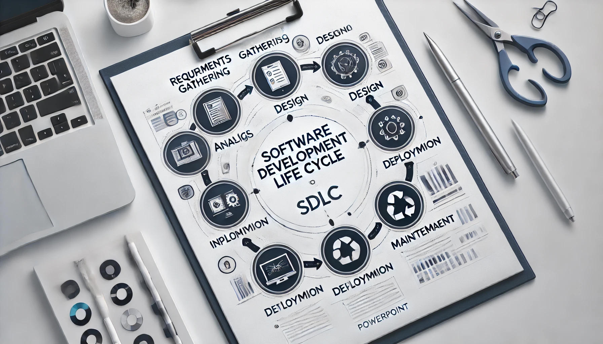
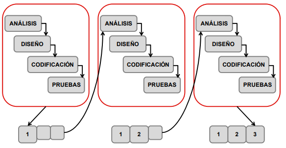
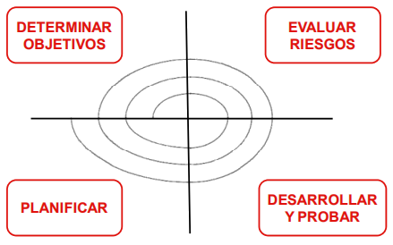
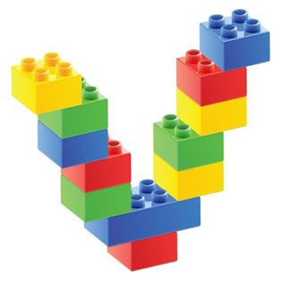
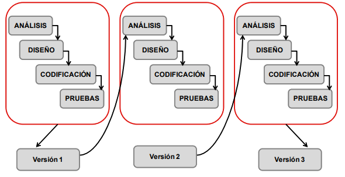
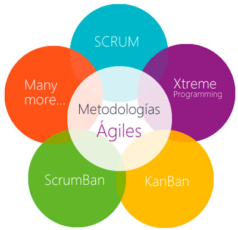
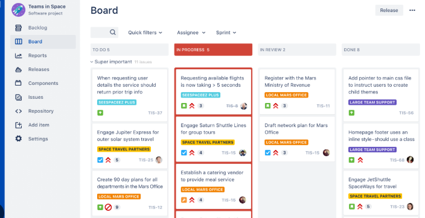

Laboratorio de Software ·
ISO 12207marco de referencia del tema
6 etapasdel requerimiento al mantenimiento
4 modeloscascada, V, espiral y ágil
Ciclo de Vida del Desarrollo de Software
Una landing docente pensada para presentar el tema, sostener la explicación oral y dejar a los estudiantes una guía clara sobre por qué el software profesional se planifica, se diseña, se prueba y se mantiene por etapas.

01
Contexto del curso y sentido del tema
El ciclo de vida se presenta dentro de Laboratorio de Software como una herramienta para pensar proyectos con método, calidad y trabajo colaborativo.
No alcanza con programar. En laboratorio buscamos comprender cómo se construye software con criterio profesional.
Fechas importantes
Primer examen22 de mayo de 2025
Segundo examen19 de junio de 2025
Recuperatorio26 de junio de 2025
La cursada contempla un proyecto integrador y la nota final surge del promedio simple entre ambos parciales y el trabajo práctico integrador.
Base de la mayor parte del recorrido técnico del curso.
Control de versiones como parte del proceso de desarrollo, no como agregado posterior.
Todo lo que aparece después en la materia se entiende mejor si primero ordenamos el ciclo de trabajo.
02
De Code & Fix a la ingeniería de software
El punto de partida histórico es un desarrollo improvisado: programar, corregir y volver a improvisar. Funciona en pequeño; se vuelve crítico en proyectos medianos o grandes.
Modelo tradicional · 1960
Code & Fix
- Se programa lo que se necesita en el momento.
- Si algo falla, se corrige sobre la marcha.
- No hay supervisión formal ni etapas claras.
- Escala mal cuando crece el sistema o intervienen varios actores.
Problema central
¿Qué fue la crisis del software?
Costos crecientes
Retrasos frecuentes
Poca calidad y errores difíciles de rastrear
Dificultad para mantener y evolucionar productos
Respuesta disciplinar
La ingeniería de software propone métodos y técnicas para desarrollar y mantener software de calidad, con mayores posibilidades de éxito.
Pregunta disparadora
¿Qué cambia cuando dejamos de ver el software como “código” y empezamos a verlo como “proyecto”?
03
¿Qué es el ciclo de vida del software?
Un marco de referencia que organiza actividades y tareas desde la definición del producto hasta la finalización de su uso.
Norma ISO 12207
Definición operativa
El ciclo de vida del software contiene las actividades y tareas involucradas en el desarrollo, la explotación y el mantenimiento de un producto software, abarcando desde su definición hasta la finalización de su uso.
¿Por qué es importante?
- Organiza el trabajo del equipo.
- Asegura calidad y trazabilidad.
- Reduce riesgos y costos.
- Mejora la gestión del tiempo y los recursos.
Requerimientos
Diseño
Desarrollo
Pruebas
Implementación
Mantenimiento
04
Etapas del ciclo de vida
Las etapas no son compartimentos vacíos: cada una toma decisiones diferentes y genera información que impacta en las siguientes.
R
Requerimientos
Entender qué necesita el cliente y qué problema se desea resolver.
A
Análisis
Traducir necesidades a lógica de negocio, riesgos y alcance.
D
Diseño
Elegir arquitectura, tecnologías, UI y estructura técnica.
</>
Desarrollo
Codificar con estándares, documentación y control de versiones.
✓
Pruebas
Verificar calidad antes del lanzamiento: unitarias, integración y usuario.
∞
Implementación + mantenimiento
Lanzar, monitorear, corregir y evolucionar el producto.
Secuencia
La idea no es recitar nombres, sino entender qué decisiones se toman en cada etapa.
Riesgo docente útil
Confundir análisis con diseño. Análisis piensa el problema; diseño piensa la solución técnica.
Puente con el curso
Lo que en laboratorio hacemos con Java, testing, patrones y Spring puede ubicarse dentro de estas etapas.
05
De requerimientos a mantenimiento
Desglose conceptual de cada fase para acompañar la explicación oral y marcar qué preguntas resuelve cada una.
Requerimientos y análisis
Preguntas guía: ¿Qué necesita el cliente? ¿Qué problema específico se busca resolver? ¿Qué debe hacer el sistema?
Diseño
Pregunta guía: ¿Cómo lo vamos a desarrollar?
Desarrollo
Aquí aparece el código, pero no como acto aislado. Se implementa siguiendo estándares, buenas prácticas, documentación y control de versiones.
// Idea docente breve
// Construir no es solo programar.
// También implica registrar, versionar y sostener coherencia.Pruebas, implementación y mantenimiento
06
Modelos de ciclo de vida del software
Los modelos no cambian el objetivo general: cambian la forma de recorrer las etapas, el manejo del riesgo y la flexibilidad frente a cambios.
Lineal y estructurado
Útil cuando los requisitos están bien definidos y cambian poco.
Diseño + prueba asociada
Relaciona cada etapa de construcción con una etapa de validación.
Iterativo y con foco en riesgo
Permite planificar, evaluar riesgos, desarrollar y volver a mejorar.
Iteraciones cortas
Entrega continua, trabajo colaborativo y adaptación al cambio.
Representaciones tomadas del material


Qué conviene destacar oralmente
- No existe un único modelo “correcto” para todos los proyectos.
- La elección depende del alcance, el riesgo, la claridad de requisitos y la necesidad de adaptación.
- La diferencia entre modelos está en la sucesión de etapas y en cómo gestionan cambios y riesgo.
07
Cascada, V, incremental y espiral
Comparar modelos ayuda a que los estudiantes no se queden solo con definiciones aisladas.
Modelo en cascada
Avance por pasos sucesivos
Se imagina como una escalera: cada paso se completa antes de pasar al siguiente.
- Fuerte orden secuencial.
- Más rígido frente a cambios.
- Útil cuando el problema está bien definido.
Modelo V
Construcción y validación acopladas
Relaciona requerimientos, diseño y codificación con pruebas unitarias, de integración, sistema y aceptación.

Modelo incremental
Agregar partes nuevas
Se construye por incrementos: cada entrega suma funcionalidad al producto.

Modelo espiral
Iterar con foco en riesgo
Se vuelve sobre el producto mejorando y refinando a medida que se evalúan riesgos.
- Determinar objetivos.
- Evaluar riesgos.
- Desarrollar y probar.
- Planificar la siguiente vuelta.
08
Modelo ágil y Scrum
Ágil propone construir en partes pequeñas, probar rápido, escuchar retroalimentación y ajustar continuamente.
Modelo ágil
Entrega iterativa e incremental
La metodología ágil es un enfoque de gestión y desarrollo basado en iteraciones cortas, colaboración continua y adaptabilidad al cambio.

Scrum
Organización rápida y flexible del trabajo
- Sprints cortos.
- Planificación, ejecución, revisión y retrospectiva.
- Trabajo visible y coordinación del equipo.

Comparación rápida
| Característica | Incremental | Espiral | Ágil |
|---|---|---|---|
| Cómo se trabaja | Se agregan partes nuevas completas. | Se mejora y perfecciona lo mismo varias veces. | Se hacen partes pequeñas rápido y con opinión del equipo. |
| Cambio de planes | Más difícil sobre lo ya hecho. | Permite mejoras, pero sigue un marco de planificación. | Admite cambios frecuentes sin romper la lógica de trabajo. |
| Imagen mental | Agregar más partes nuevas. | Mejorar lo que ya existe. | Construir, probar, ajustar y seguir. |
09
Cierre docente
Una síntesis para terminar la exposición y conectar el tema con el recorrido de la materia.
Ideas que conviene tener en cuenta
- El software profesional no se improvisa.
- El ciclo de vida organiza tareas, decisiones y entregables.
- Los modelos cambian la manera de recorrer las etapas, no la necesidad de pensar el proceso.
- Lo que veremos en laboratorio puede ubicarse dentro de estas fases.
Puente con próximas clases
- Requerimientos → modelado de dominio.
- Diseño → arquitectura, patrones y decisiones tecnológicas.
- Desarrollo + pruebas → Java, testing, persistencia y calidad.
- Implementación → APIs, servicios y mantenimiento evolutivo.